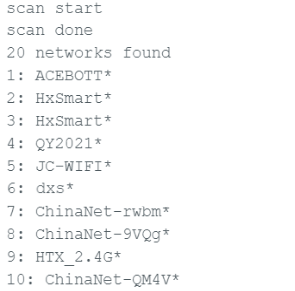

Плата контроллера QA018/QA019 ESP32 Max V3.0
1.Введение
Плата контроллера ESP32 Max 3.0 — это высокопроизводительный микроконтроллер с низким энергопотреблением, идеально подходящий для разработки устройств Интернета вещей. Она оснащена двухъядерным процессором с тактовой частотой 240 МГц, 520 КБ ОЗУ и 4 МБ флэш-памяти. Встроенные модули Wi-Fi и Bluetooth 4.2 обеспечивают беспроводную связь. 34 порта GPIO позволяют подключать и управлять различными периферийными устройствами.
Плата контроллера ESP32 Max 3.0 также оснащена функцией подзарядки. Плата контроллера оснащена пятью светодиодными модулями, первые четыре из которых соответствуют текущему уровню заряда аккумулятора. При полном заряде аккумулятора все четыре светодиода горят синим светом, а при снижении заряда количество светодиодов также уменьшается. Пятый светодиод указывает на процесс зарядки аккумулятора: красный – заряжается, а не горящий – аккумулятор заряжен или не заряжается.
Если вы хотите узнать больше о ESP32, нажмите здесь.
2.Особенности
Интерфейс Type-C для улучшенной совместимости
Интерфейс штифта богат, чтобы удовлетворить потребности строительной отрасли
Цвет лапки чистый, легко различимый и с проводкой
Настройте функцию зарядки, чтобы реализовать удобную зарядку аккумулятора.
Встроенный индикатор питания позволяет контролировать состояние батареи в любое время
3.Характеристики
|
Связность |
WI-FI | Bluetooth LE |
|
Чип |
ESP-WROOM-32 |
|
Часы |
240 МГц |
|
ПЗУ |
448 КБ |
|
SRAM |
520 КБ |
|
ВСПЫШКА |
4 МБ |
|
Интерфейсы |
UART | I2C | SPI | CAN |
|
Входные напряжения |
6-18В |
|
Распиновка |
25(ЦИФРОВОЙ) | 15(АНАЛОГОВЫЙ) | 25(ШИМ) | 2(ЦАП) | 2(UART) | 2(SPI) | 1(I2C) |
Намекать
Остальные параметры ESP32 Max V3.0 такие же, как у ESP32 Max V1.0, но имеют следующие отличия:
1. Входное напряжение ESP32 Max V1.0 составляет 6–18 В, но входное напряжение ESP32 Max V3.0 составляет 8,4 В. Плата может поддерживать только 2 литиевые батареи, не подключайте ее к сухой батарее!!
2.ESP32 Max V3.0 имеет функцию зарядки и функцию отображения уровня заряда батареи, ESP32 Max V1.0 ее не имеет.
3.ESP32 Max V3.0 имеет более надежную защиту от высоких токов, чем ESP32 Max V1.0.
4.Описание печатной платы
На рисунке показаны контакты GPIO и соответствующие функции платы контроллера ESP32 Max 1.0, включая контакты АЦП, ЦАП, ШИМ, I2C, SPI и т. д.
Только входной контакт: GPIO 34/GPIO 35/GPIO 36/GPIO 39
Стандартный вывод I2C: GPIO 21 (SDA)/GPIO 22 (SCL)
Вывод ЦАП: GPIO 25（DAC1）/GPIO 26（DAC2）
5.Примечание
(1)Вывод ADC2 нельзя использовать при использовании Wi-Fi. Поэтому, если вы не можете получить значение с вывода GPIO ADC2 по Wi-Fi, рассмотрите возможность использования вывода GPIO ADC1.
(2) Входной канал АЦП имеет 12-битное разрешение. Это означает, что вы можете получать аналоговые показания в диапазоне от 0 до 4095, где аналоговое значение 0 соответствует 0 В, а аналоговое значение 4095 соответствует 3,3 В. Вы также можете задать разрешение канала и диапазон АЦП в коде.
(3) Выводы АЦП ESP32 нелинейны. Вы можете не различать 0 и 0,1 В, 3,2 и 3,3 В. Имейте это в виду при использовании выводов АЦП. Изображение данных будет похоже на показанное ниже.
6. Подробное описание использования с программным обеспечением ARDUINO:
Шаг 1 | Загрузите среду Arduino (IDE)
Шаг 2 | Установка плагина ESP32 в среду Arduino IDE
Шаг 3 | Загрузить драйвер CH340
Шаг 4 | Загрузите программу светодиодного освещения
Подключите плату к компьютеру с помощью кабеля передачи данных Type-C. Светодиод должен загореться.
Выберите «ESP32» -> «ESP32 Dev Module» в меню «Инструменты» > «Плата».
Выберите последовательное устройство платы в меню «Инструменты» | «Последовательный порт». Скорее всего, это COM8 или выше (COM1 и COM2 обычно зарезервированы для аппаратных последовательных портов). Чтобы узнать это, отключите плату и снова откройте меню; исчезнувшая запись должна быть указана как плата. Снова подключите плату и выберите этот последовательный порт. Здесь следует выбрать COM8, как показано ниже.
Вы также можете найти нужные порты в диспетчере устройств.
Загрузить программу.
1// the setup function runs once when you press reset or power the board
2void setup() {
3 // initialize digital pin 2 as an output.
4 pinMode(2, OUTPUT);
5}
6
7// the loop function runs over and over again forever
8void loop() {
9 digitalWrite(2, HIGH); // turn the LED on (HIGH is the voltage level)
10 delay(1000); // wait for a second
11 digitalWrite(2, LOW); // turn the LED off by making the voltage LOW
12 delay(1000); // wait for a second
13}
Нажмите кнопку «Загрузить», чтобы загрузить код. появится в строке состояния.
Подождите несколько секунд. Если загрузка прошла успешно, появится сообщение «Загрузка завершена».
И светодиод на плате мигает.
Если ваши тесты прошли успешно, попробуйте загрузить следующий код. При обнаружении сети в окружении будут получены номера и имена всех ближайших сетей, которые отобразятся в последовательном порту, а индикатор загорится.
1/*
2When a network is found in the environment,
3the number and name of all nearby networks will be obtained and displayed in the serial port,
4and the blue indicator will light up.
5*/
6#include "WiFi.h"
7void setup()
8{
9 Serial.begin(115200);
10 pinMode(02,OUTPUT);
11 //set WiFi to station mode and disconnect from an AP if it was previously connected
12 WiFi.mode(WIFI_STA);
13 WiFi.disconnect();
14 delay(100);
15 Serial.println("Setup done");
16}
17void loop()
18{
19 Serial.println("scan start");
20 // WiFi.scanNetworks will return the number of networks found
21 int n = WiFi.scanNetworks();
22 Serial.println("scan done");
23 if (n == 0) {
24 Serial.println("no networks found");
25 } else {
26 Serial.print(n);
27 Serial.println(" networks found");
28 digitalWrite(2, HIGH);//the blue indicator lights up
29 for (int i = 0; i < n; ++i) {
30 //print SSID and RSSI for each network found
31 Serial.print(i + 1);
32 Serial.print(": ");
33 Serial.print(WiFi.SSID(i));
34 Serial.println((WiFi.encryptionType(i) == WIFI_AUTH_OPEN)?" ":"*");
35 delay(10);
36 }
37 }
38 Serial.println("");
39 // wait a bit before scanning again
40 delay(5000);
41}
Диаграмма эффекта отображения последовательного порта выглядит следующим образом:
7. Список пакетов
Плата контроллера ESP32 Max V3.0 * 1 шт.
Кабель Type-C * 1 шт.
© Авторское право ACEBOTT. Все права защищены.
Создано с помощью Sphinx с использованием темы , предоставленной Read the Docs .